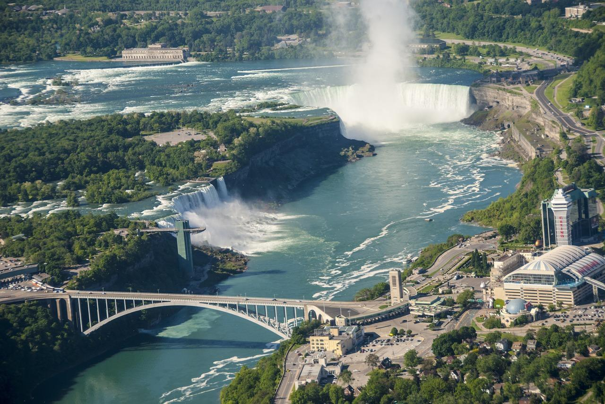

𝔼𝕊𝕋𝔸𝔻𝕆𝕊 𝕌ℕ𝕀𝔻𝕆𝕊
Cataratas do Niágara
As Cataratas do Niágara ficam localizadas exatamente na fronteira dos Estados Unidos com o Canadá.
Estas talvez sejam as quedas d’água mais conhecidas do mundo, sendo um ponto turístico dos Estados Unidos e do Canadá que atrai muita gente.

Walt Disney World Resort
Walt Disney World Resort, comumente conhecido como Walt Disney World e informalmente Disney World,
é o resort de entretenimento mais visitado em todo o mundo, situado em Bay Lake, Flórida, próxima a cidade de Orlando.
Parque Nacional de Yosemite
O Parque Nacional de Yosemite fica nas montanhas da Serra Nevada, na Califórnia, EUA.
Ele é famoso por suas sequoias antigas e gigantescas, pelo Tunnel View, pela famosa vista da imponente Bridalveil Fall e pelas falésias de granito de El Capitan e Half Dome.
Em Yosemite Village, há lojas, restaurantes, acomodações, o Yosemite Museum e a Ansel Adams Gallery, com impressões das renomadas paisagens em preto e branco da área registradas pelo fotógrafo.